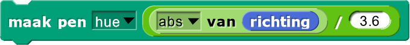
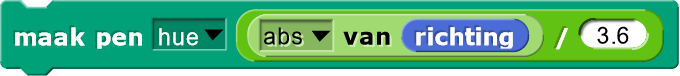
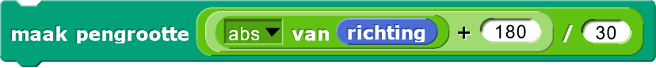
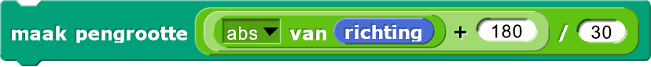

Daisy-ontwerp
In dit project ga je code schrijven om het geometrische ontwerp hieronder te tekenen.
Probeer zelf het ontwerp te variëren om complexere ontwerpen te maken.

Je kan deze animatie bekijken voor wat ideeën.

- Bespreek hoe dit ontwerp bedacht is. Wat zijn de fundamentele bouwblokken? Hoe zijn deze neergezet?
-
Het hele ontwerp bestaat uit cirkels. Dus het eerste wat je moet schrijven is code om een cirkel
te tekenen. Om dit te doen maak je een nieuw blok,
Teken Cirkelvia het Variabelen-menu met de "Maak een blok"-optie. Hint: Een normale veelhoek met 30 of meer zijdes lijkt al goed genoeg op een cirkel. - Nu je een cirkel kan tekenen, kan je een Daisy-ontwerp maken door je sprite een klein beetje te
draaien, telkens als hij bijna klaar is met het tekenen van een cirkel. In het ontwerp hierboven zitten 24
cirkels. Hoeveel moet de sprite iedere keer draaien wanneer hij een cirkel maakt om een volledige
cirkel van 360° te maken wanneer alle cirkels af zijn? Maak een nieuw blok genaamd
Teken Daisyom dit te doen.
-
Breid je code uit zodat je de volgende patronen kan maken.


-
Bekijk de volgende patronen waar de penkleur en -dikte aangepast worden voor het Daisy-ontwerp. Merk
op dat in het eerste ontwerp de kleur per cirkel verandert en in het tweede ontwerp de pendikte.
Bestudeer de code en probeer je eigen variaties te maken.
 

 

- Maak je eigen variaties op het Daisy-ontwerp en deel ze met je klasgenoten.